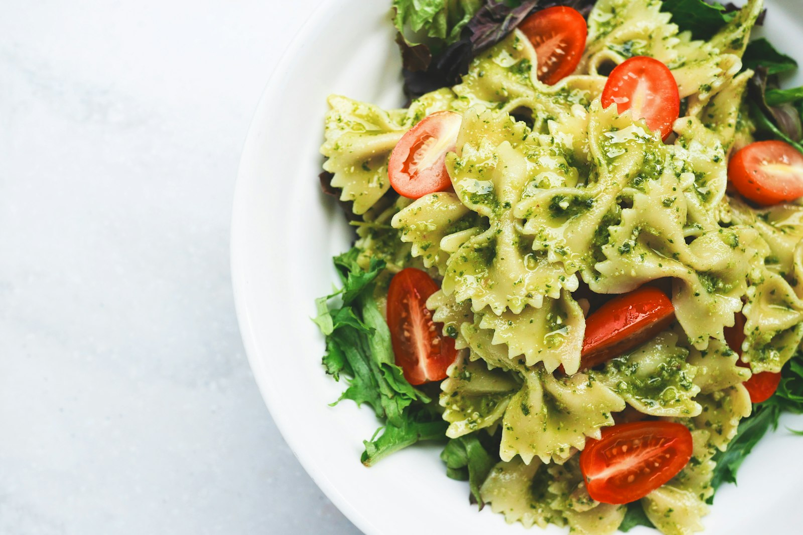
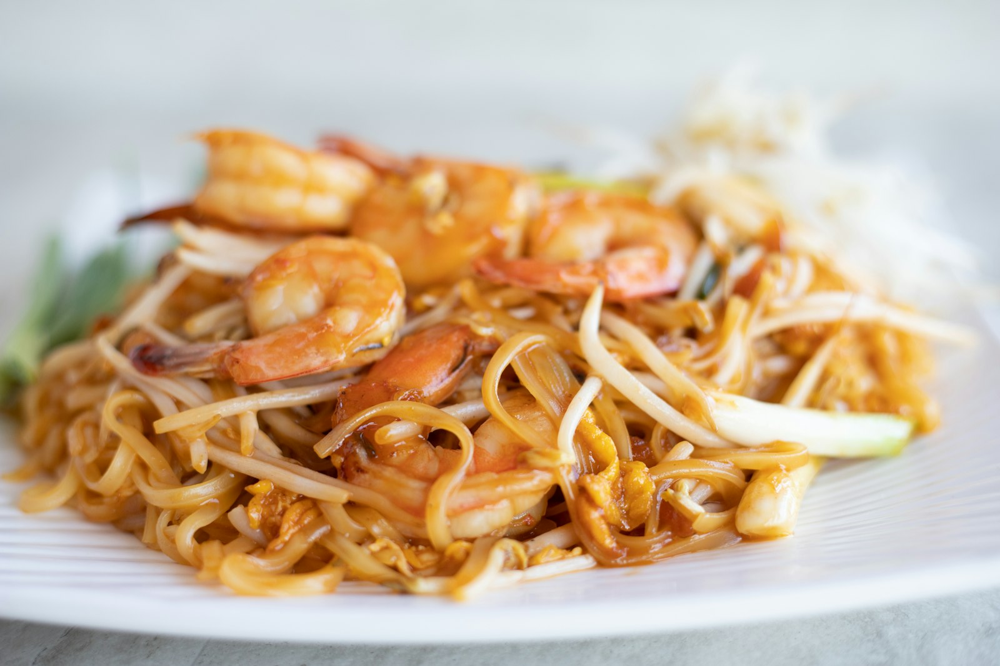
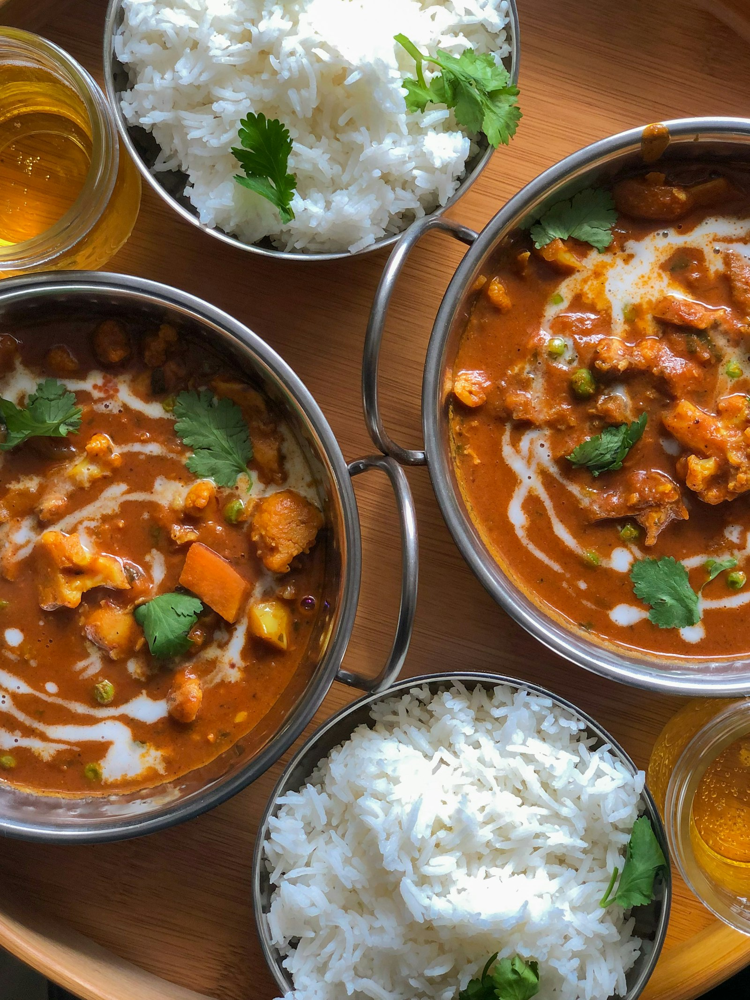
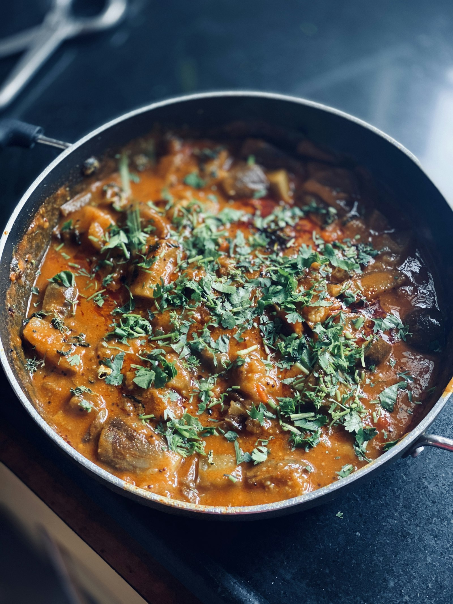
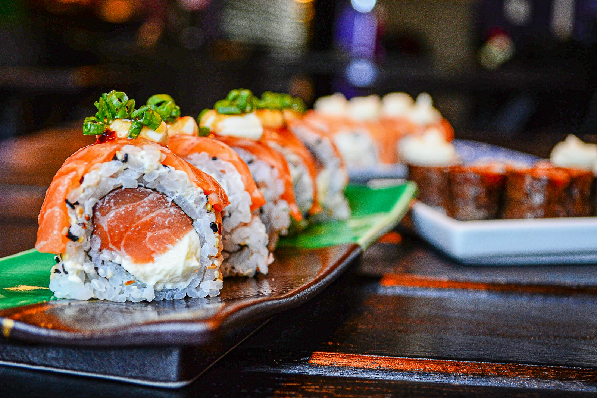
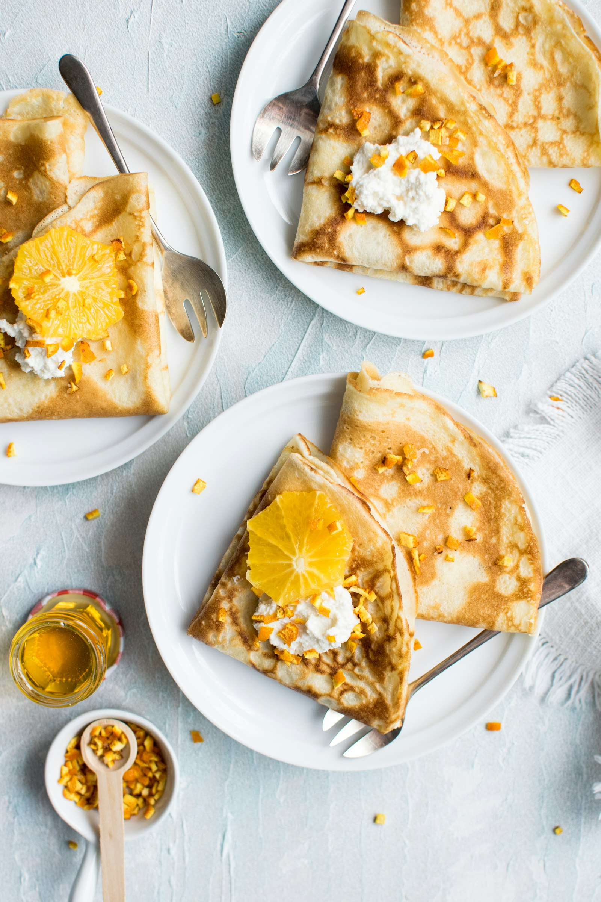

Nº 01 — Couverture
Les cuisines du monde, sous un même toit
Chez Marguerite, on voyage sans quitter la table.
Une grande salle, un comptoir en bois, et vingt-quatre cuisines qui se croisent dans l’assiette. Ici, on cuisine chaque jour à la main, avec les produits du marché et le plaisir de recevoir.

pays à la carte
plats faits maison chaque jour
note des convives
Nº 02 — La maison
Fondé en 1998 par Marguerite Moreau
Un comptoir, une poêle, et des mains qui ne trichent pas.
Marguerite a ouvert la salle du coin avec une conviction simple : la bonne cuisine ne se décrète pas, elle se fait. Chaque matin, on choisit les légumes sur le marché, on roule la pâte, on flambe, on assaisonne — à l’œil, comme au premier jour.
La carte ne s’arrête pas au coin de la rue. Elle traverse les frontières : les pâtes de Rome, le curry de l’Inde, les tacos de Mexico, le couscous du vendredi. Vingt-quatre traditions, une seule maison.

ans d’habitude,
zéro raccourci
Nº 03 — La carte
Le tour du monde en six assiettes
La carte du soir, composée comme une lettre.
Italie — Rome
Cacio e pepe
Spaghettis frais, pecorino romano, poivre noir passé au moulin. Une carte postale de Rome dans une assiette.

14 €
Thaïlande — Bangkok
Pad thaï
Nouilles de riz sautées, crevettes, cacahuètes grillées, pousses de soja, citron vert et tamarin. Vif, chaud, honnête.

15 €
Mexique — Mexico
Tacos al pastor
Tortillas de maïs, porc mariné à l’ananas, oignons confits, coriandre et salsa verde maison. On les mange avec les doigts.

12 €
Inde — Kochi
Curry jaune de saison
Poulet mariné au curcuma, coco, mangue verte, riz basmati parfumé. Les épices sont torréfiées sur place, chaque midi.

16 €
Maghreb — Marrakech
Couscous du vendredi
Semoule roulée à la main, légumes du marché, bouillon parfumé au ras-el-hanout, merguez et pois chiches. Le plat qui réunit.

17 €
Japon — Tokyo
Sushi du comptoir
Assortiment du chef, poisson frais du jour, riz vinaigré tiède, wasabi discret. Six pièces, le temps de respirer.

22 €
Nº 04 — Le lieu
La salle, la flamme, le marché
Trois endroits où la maison se reconnaît.



On cuisine comme on reçoit des amis : avec le cœur, pas avec les horaires.
— Marguerite, fondatrice
Nº 05 — Réserver
Nous écrire
Une table, une question, un mot doux.
Laissez-nous un message : une réservation, une occasion, un coup de cœur. On vous répond dans la journée, sans formule toute faite.
- Emailbonjour@chezmarguerite.com
- HorairesMar – Sam · 12h–14h30, 19h–22h30